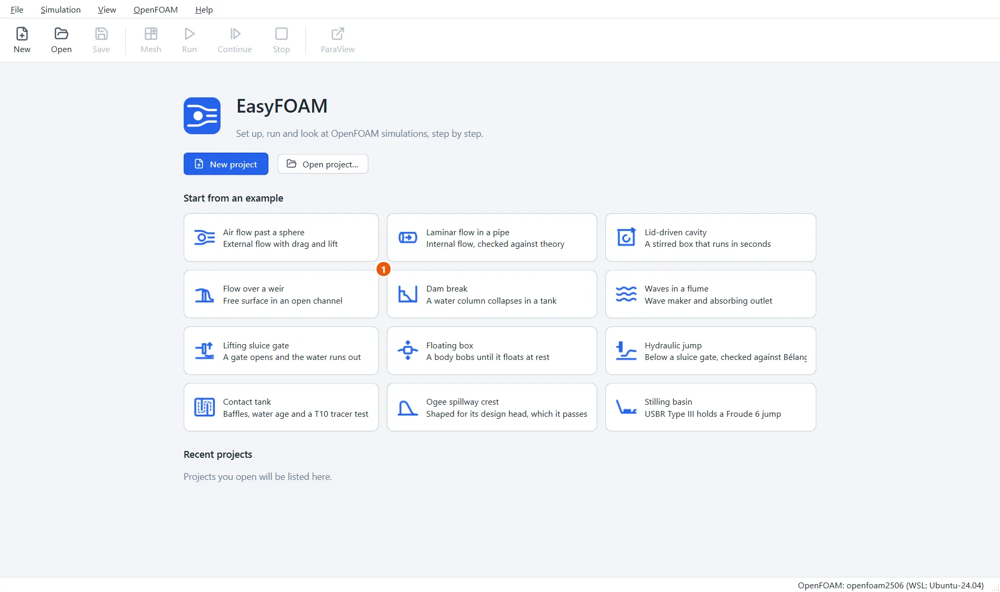
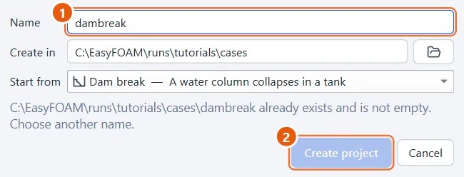
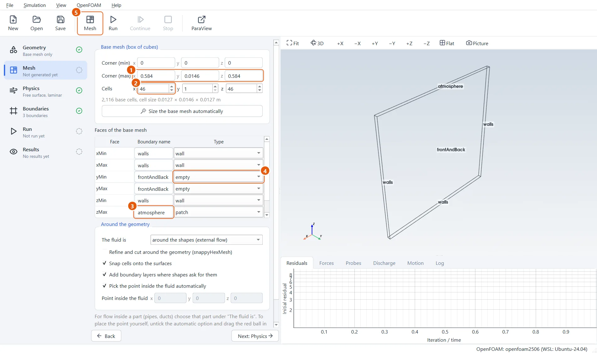
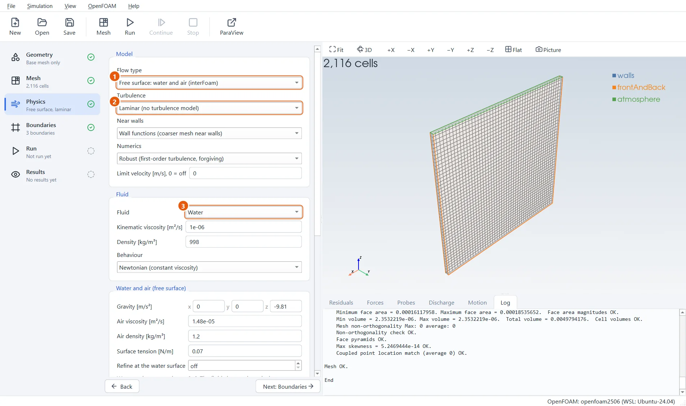
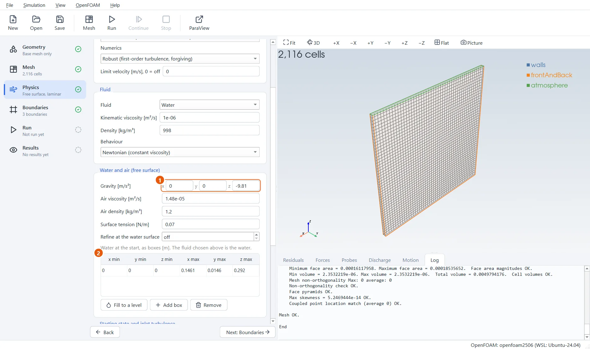
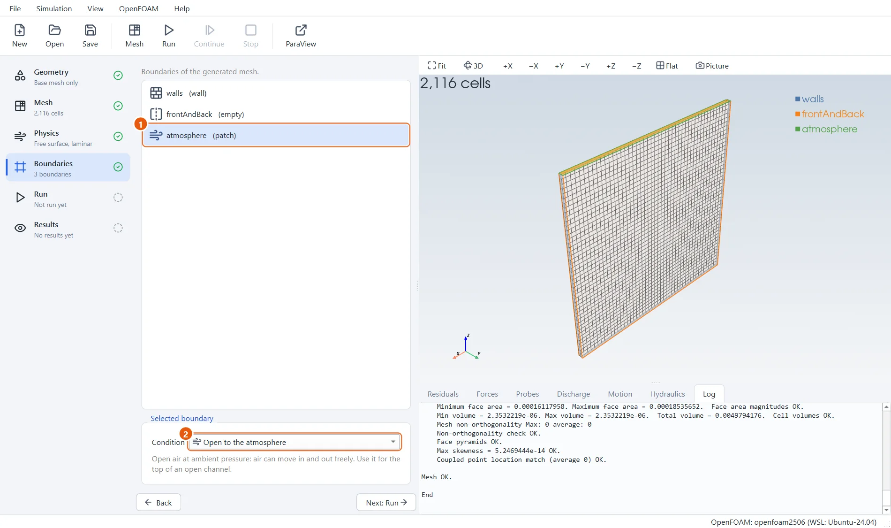
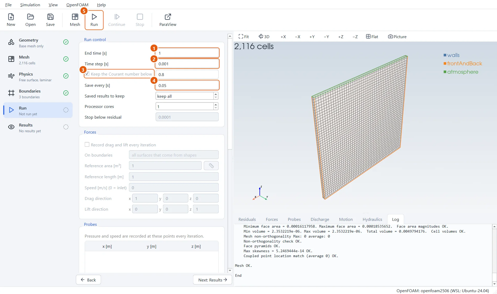
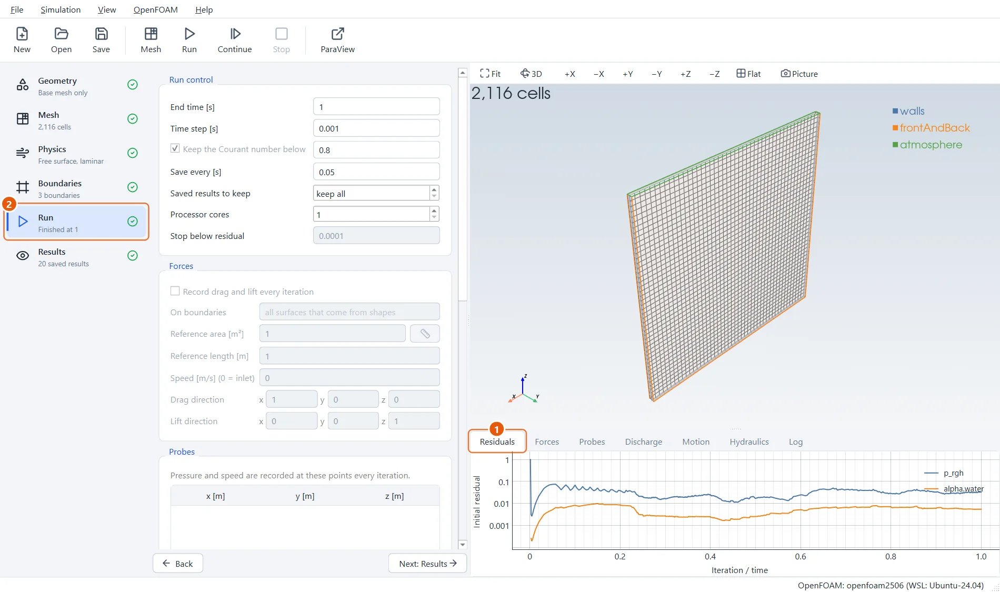
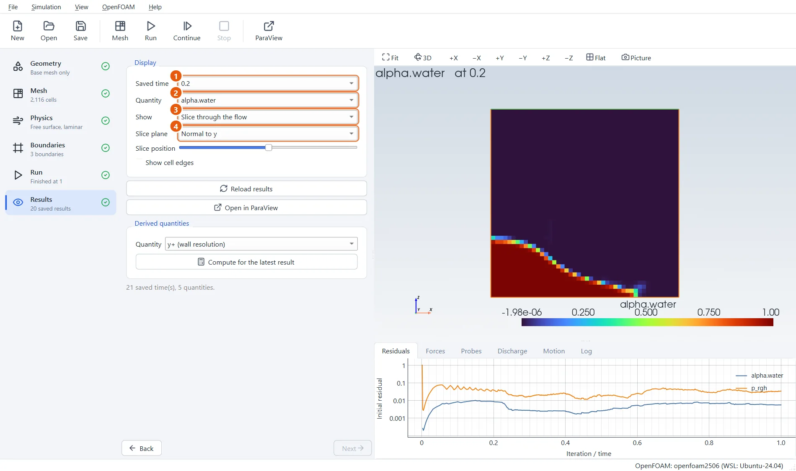
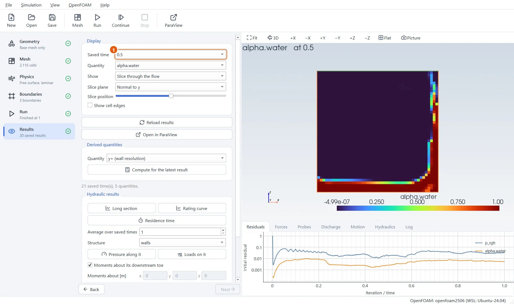

Tutorial 5 of 19
Dam break
Water and air with a free surface: a column of water collapses in a tank.
Rivers, spillways, tanks and waves all have a free surface: water below, air above, and a boundary between them that moves. EasyFOAM follows it by storing, for every cell, the share of the cell that is full of water (a number between 0 and 1 called alpha.water).
The dam break is the simplest such case. A column of water stands in one corner of a tank; at time zero the invisible dam holding it disappears. The tank is a thin slice, one cell thick, so the run is quick.
What you will learn
- choose the free-surface flow type
- say where the water is at the start
- leave the top of the tank open to the air
- run in time, with a time step that adjusts itself, and step through the saved moments
Computer time: a few seconds for the mesh and about a minute for the run.
1Open the example
Start EasyFOAM. This case is one of the examples on the start page: it comes with every setting filled in, and this tutorial walks through each of them so that you understand the case and could build it yourself.
- Click Dam break.


2Name the project
The project is an ordinary folder that EasyFOAM creates for you.
- Type a name, for example
dambreak. - Click Create project.


3A tank with an open top
There are no shapes, so go straight to the Mesh step. The tank is 0.584 m wide and high and one cell (14.6 mm) thick. Look at the names of the faces: three of them are walls, the top is atmosphere, and the front and back are empty because nothing happens through the thickness.
- Corner (max):
0.584,0.0146,0.584. - Cells:
46,1,46. - zMax, the top, is named
atmosphereand has the typepatch: an opening. - yMin and yMax are
empty. - Click Mesh in the toolbar (or press F5).


4Water and air
In the Physics step the flow type is what makes this a free-surface case. Once it is chosen, the fluid you pick is the water, and a new group of settings for the air and the water's starting position appears below.
- Flow type: Free surface: water and air.
- Turbulence: Laminar is enough for this short, violent event.
- Fluid: Water.


5Where the water starts
Scroll down to Water and air. Gravity points down the z axis. The table lists boxes that are full of water at the start; everything else is air. Here there is one box: the column, 0.146 m wide and 0.292 m high, in the corner.
- Gravity:
0,0,-9.81. - One box of water: from
0, 0, 0to0.1461, 0.0146, 0.292.


6The open top
The top of the tank must let air in and out as the water moves, without holding the water in. That is what Open to the atmosphere does. EasyFOAM chose it by itself because of the name.
- Select atmosphere.
- Condition: Open to the atmosphere.


7Running in time
This is a transient run: it marches forward in small time steps. You choose how long to simulate and how often to save. The time step looks after itself: EasyFOAM shortens it when the water moves fast, so that nothing crosses more than a cell in one step (that is what the Courant number measures).
- End time:
1s. - Time step:
0.001s to start with. - Keep the Courant number below
0.8: leave it ticked. - Save every:
0.05s, which gives 20 saved moments. - Click Run in the toolbar (or press F6).


8The run
This small case takes only a few seconds. While a run goes on, the line at the bottom of the window shows how far it is and how much of the tank is filled with water. That share should stay the same from start to end: a quick check that no water is lost.
- In a run in time the residuals do not fall to zero; they stay at a steady, low level.
- The Run step shows that the run reached the end time.


9The collapse
When the run ends, look at alpha.water on a slice: red is water, blue is air. At 0.2 s the column has slumped and a tongue of water is racing along the floor.
- Saved time:
0.2. - Quantity:
alpha.water. - Show: Slice through the flow.
- Slice plane: Normal to y.


10The splash
Step through the saved times. By 0.5 s the water has hit the far wall, climbed it and is falling back on itself.
- Saved time:
0.5. Use the arrow keys to step through the others.


11Try it yourself
- Use
92,1,92cells: the water surface becomes sharper and the splash shows more detail. - In the Physics step choose Free surface, sharper interface as the flow type and compare.
- Make the column taller, or add a second box of water on the other side.
- Click Open in ParaView and press play to watch the collapse as a film.